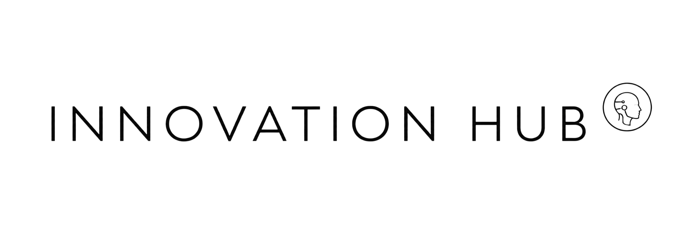

AI & Innovation Hub
We apply artificial intelligence to improve processes, teams and results.
At TrendMakers, we help companies incorporate Artificial Intelligence, automation and digital tools into their daily operations. It is not only about using technology: it is about applying it where it truly creates value. We design practical solutions to optimize processes, reduce manual tasks, organize information, improve customer service and train teams to work better with AI.
Book a call
What do we do in AI & Innovation Hub?
We help companies understand, implement and use Artificial Intelligence in concrete ways. We combine diagnosis, training, automation and solution development so technology becomes useful inside the business operation. We work on real processes, real teams and concrete needs. Our goal is for AI to become an operational advantage, not an isolated tool.
- We apply AI to commercial, administrative, operational and customer service processes.
- We automate repetitive tasks and workflows.
- We train teams to use AI productively and strategically.
- We implement assistants, chatbots and internal tools.
- We create dashboards and reports to organize business information.
- We integrate digital tools to improve daily efficiency.
- We support companies in the adoption of new technologies.
From isolated tools to smarter companies
This service is for you if:
- Your team uses AI, but without a clear strategy.
- You want to train your company to make better use of these tools.
- You have manual processes that consume time and resources.
- Information is disorganized or scattered across different platforms.
- You want to automate tasks, but do not know where to start.
- You need to improve service, lead management or internal reporting.
- You want to incorporate technology without complicating daily operations.
What is included in AI & Innovation Hub?
We adapt each project to the reality of each company, but we work across three main pillars:
Block 1 - AI Applied to Companies
- Identification of real opportunities to apply AI.
- Implementation of AI tools in internal processes.
- Use of generative AI for content, analysis, support and management.
- Creation of custom assistants for teams or customers.
- Improvement of commercial, administrative and operational processes through AI.
Block 2 - AI Training & Adoption
- Training for commercial, administrative, leadership and operational teams.
- Training in the use of AI tools for daily tasks.
- Best-practice guides to incorporate AI safely and effectively.
- Support during technology adoption inside the company.
- Development of criteria to use AI with a focus on productivity and quality.
Block 3 - Automation, Data & Dashboards
- Automation of repetitive tasks and workflows.
- Integration of tools, forms, CRM, spreadsheets and platforms.
- Executive dashboards to visualize key business metrics.
- Automatic reports to improve decision-making.
- Data organization, extraction and cleaning for operational use.
How do we deliver this service?
1. Diagnosis and opportunities
We analyze how your company works, which processes consume the most time, which tools your team uses and where AI can create real improvements.
2. Design and implementation
We define the most appropriate solutions: training, automations, dashboards, internal assistants or improvements to existing processes.
3. Training and handoff
We train the team, document how the solutions work and leave everything ready so the company can use it clearly and sustainably.
What results can you expect?
- Teams better prepared to use AI in their daily work.
- Less time lost on repetitive tasks.
- More organized, faster and more consistent processes.
- Better use of the information available in the company.
- Greater productivity without adding more structure.
- Digital tools applied to concrete business problems.
- A clear, practical AI adoption aligned with company goals.
Why work on AI & Innovation Hub with TrendMakers?
- We do not implement technology because it is trendy. We work so Artificial Intelligence has a concrete application inside the business.
- We combine strategic vision, operational knowledge, automation, data and training so the company can incorporate AI in a useful, understandable and actionable way.
- Our approach seeks solutions the team can use, sustain over time and connect with real goals for growth, efficiency and operational improvement.
Are you ready to apply AI in your company?
Let's work together to identify opportunities, train your team and implement Artificial Intelligence solutions that improve the way your business operates.
Book a callOther Services
Marketing Automation & Growth
Strategic marketing to attract better clients and organize commercial opportunities.
Branding & Communication
Professional identities and coherent communication.
Web & E-Commerce Development
Fast, modern websites and stores integrated with your commercial channels.
Consulting, Data & Strategy
Strategic direction based on analysis and key metrics.